HOW YOU DIED · UI EXPLORATION · SPEC SHEETS 01–04
THE PAINTER'S PALETTE
palette: Resurrect 64 · grid: integer only
HUD scale 2× native · all specimens shown at 2×
hand to: pixel artist + implementing engineer
HUD scale 2× native · all specimens shown at 2×
hand to: pixel artist + implementing engineer
01
FOUNDATIONS
the system every future panel is built from
COLOR ROLES — WHICH OF THE 64 MEAN WHAT
{{ c.hex }}
{{ c.name }}
{{ c.use }}
Reserved: the two ghost blues never appear in chrome. Blue on screen always means "blueprint / preview" — nothing else may claim it.
THE BOARD — 9-SLICE PANEL, 24×24 MASTER / 8PX CORNERS
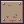
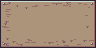

Anatomy, outside-in: 1px #2e222f outline → 1px #c7dcd0 sheen on the top edge only (light from above) → #ab947a face with sparse #966c6c grain dashes and #694f62 knots → 2×2 nail (#694f62 + one #c7dcd0 glint) 3px into each corner. Edge nicks (1–2px bites out of the outline) sell "weathered"; keep ≤1 per 22px of edge. Center tile repeats, never stretches — grain must not smear. Sanded-field rule: on any board that carries text, grain stays within ~8px of the edges; the field behind text is plain #ab947a. Texture frames the words, never sits under them.
BUTTON ANATOMY — EVERYTHING IS A SLOT
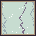
36×36 native:
1px ink outline
1px state frame
32px content (icon or material chip)
Selection grows the slot to 40×40 (3px gold frame + #fbb954 inner ring), overhanging its neighbors — the loaded brush physically lifts off the board.
1px ink outline
1px state frame
32px content (icon or material chip)
Selection grows the slot to 40×40 (3px gold frame + #fbb954 inner ring), overhanging its neighbors — the loaded brush physically lifts off the board.
STATES
normal
#ab947a
#ab947a
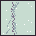
hover
#c7dcd0
#c7dcd0
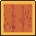
selected
#f9c22b, 40px
#f9c22b, 40px
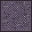
disabled
50% ink dither
50% ink dither
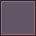
empty
#625565
#625565
Disabled = material unavailable (no stock): chip stays visible under a 50% #2e222f checker dither — you can still see what you lack. Same five states apply to tools, tabs, and every future button.
TYPE & SPACING
Font: m6x11 (Daniel Linssen, free license) — 6×11 body with true lowercase, plus m6x11plus for headings. Scale: body 1× native (22 screen px at 2× HUD), headings 2×, keybind digits 1×. Rule: text over the world always gets a 1px #2e222f outline; text on a board never does. (Sheets use Jersey 10 / Tiny5 as web stand-ins.)
{{ s.k }}{{ s.v }}{{ s.n }}
02
THE PALETTE BAR
bottom-center · one board · tools left, paint right
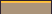
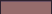
WALLS FURNITURE FLOORS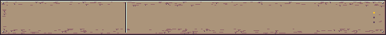
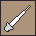
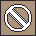
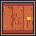
● Keybind digits hang below the board edge, outlined — readable over any terrain, never crowding the art.
● Swatches show real material art, 32px chips cropped from the wall sheets — matter, not hex codes.
● Groove + sheen line splits tools from paint; 3 stacked dots at far right = shelf position.
IN CONTEXT — 1296×720 SHOWN AT HALF

WHY BOTTOM-CENTER. The strokes happen in the world; eyes live at screen center. Bottom-center keeps the palette in peripheral vision without occluding where you paint (you paint upward into the canvas, like a real palette held below the easel). Left/right docks were explored and rejected: vertical stacks break the 1–9 digit metaphor, and colony sims scroll horizontally more than art apps do.
OVERFLOW = SHELVES. One board never grows. Swatches group into data-driven category shelves (walls / furniture / floors… mods add more). Tabs sit on the board's top edge like paint-tin labels; Tab cycles shelves, digits 1–8 always address the visible shelf. Past ~6 shelves, tabs compress to icons + tooltip. A shelf holds max 8 — beyond that a category splits (walls I / walls II). No scrolling, no popups, nothing moves under a resting cursor.
KEYBINDS. B paint · P pattern · I eyedropper · X cancel · 1–8 swatches · Tab shelf. Plus the art-app power move: hold Alt = temporary eyedropper while any tool is in hand; release and you're painting the picked material. Selecting a swatch while cancel is armed auto-swaps back to paint — picking up paint means you intend to paint.
03
CURSORS, STROKES & MOTION
the tool in your hand IS the cursor
CURSOR PER TOOL — GLYPH + LOADED CHIP
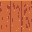
trowel
hotspot (27,5) blade tip
chip = loaded paint
hotspot (27,5) blade tip
chip = loaded paint
pattern brush
hotspot (26,6) bristles
chip = pattern's material
hotspot (26,6) bristles
chip = pattern's material
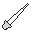
eyedropper
hotspot (3,28) tip
no chip — it's empty
hotspot (3,28) tip
no chip — it's empty
cancel
hotspot (16,16) center
hovered ghost tints red
hotspot (16,16) center
hovered ghost tints red
OS cursor hides over the canvas; the 32px glyph renders on the HUD layer at 2×, snapped to real pixels. The 10×10 material chip docks at the glyph's lower-right — one glance answers both "what tool" and "what paint". Over UI, the normal pointer returns. Cell under the hotspot gets a 1px #8fd3ff hover outline: what will happen on click, always visible.
SHIFT-LINE = CHALK LINE · PATTERN BRUSH
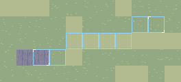
Hold Shift: outline-only cells (#8fd3ff, 1px, no fill) snap a Bresenham line from the last painted cell to the cursor — taut string, nothing committed. White corner ticks mark both anchors. Click: the line fills into ghosts in one stroke-flow (see motion, below). No line tool, no mode — the pixel-editor convention, verbatim.
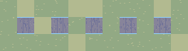
Pattern brush v1 ships one pattern: 1-on / 1-off (fence posts). No picker UI — the pattern lives in the tool. Selecting the tool shows a 4-cell rhythm strip in its tooltip. When patterns multiply later, re-tapping P cycles them (same muscle memory as shelf-Tab); the cursor chip alternates chip/blank to show the rhythm.
MICRO-ANIMATION SPEC — WHICH ICON ROWS GET FRAMES
ELEMENTFRAMESTIMINGBEHAVIOR
{{ m.el }}{{ m.frames }}{{ m.timing }}{{ m.what }}
The one rule: idle UI is perfectly still. Motion only ever acknowledges the player's hand — a select, a pick, a stroke. Nothing wiggles to be noticed. All animation steps whole frames (steps(1)); no tweening, ever.
04
PROOF: THE FOUNDATIONS GENERALIZE
one sketch each — not finished designs
TOOLTIP + KEYBIND HINT
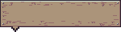
GRANITE WALL
[3] · 4× GRANITE BLOCK · NO STOCK
Small board, stepped notch toward its anchor, sanded field (grain at edges only) so ink type stays crisp. Name in heading type (ink on board), second line: keybind in brackets, cost, and the disable reason when dithered. Appears after 300ms hover, instantly during keyboard focus. Never follows the mouse.
PAWN INSPECTION CARD

MARA VOSS
HAULING MARBLE → STOCKPILE
(CLOSEST HAUL JOB · NOTHING URGENT)
FOOD
62
REST
34
MOOD
71
CLICK PAWN AGAIN TO FOLLOW · [ESC] CLOSE
Same board, same slot logic. Need bars: 2px ink outline, #625565 track, fill in role colors (green / gold / red at <25%), 12px chunks with a darker tick — readable at a glance, counts like a supply gauge. Action line + reasoning in parentheses: the story surface, always current.
HUD STATUS LINE
SEED 8841F·POP 6·SPEED ×2·48 PX/TILE
Deliberately not a board: ambient sim data is ink-on-shadow (#2e222f plate, #3e3546 hairline), quiet against the world. Boards are for things you touch; plates are for things you read. Gold marks the one live-changing value. Top-left, fixed.
Out of scope, by design: menus, alerts, settings, storyteller UI. When they arrive they inherit: boards for touchable, plates for readable, slots for clickable, gold for selected, blue for ghosts, red for warnings.
How You Died — palette exploration · sheets 01–04 · all pixel specimens generated at native res, shown 2×
fewer clicks · chunkier pixels · more paint